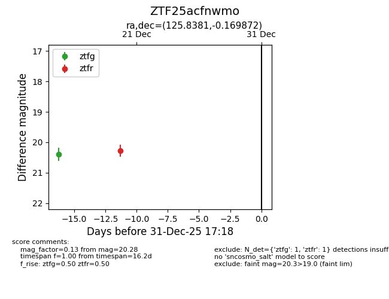
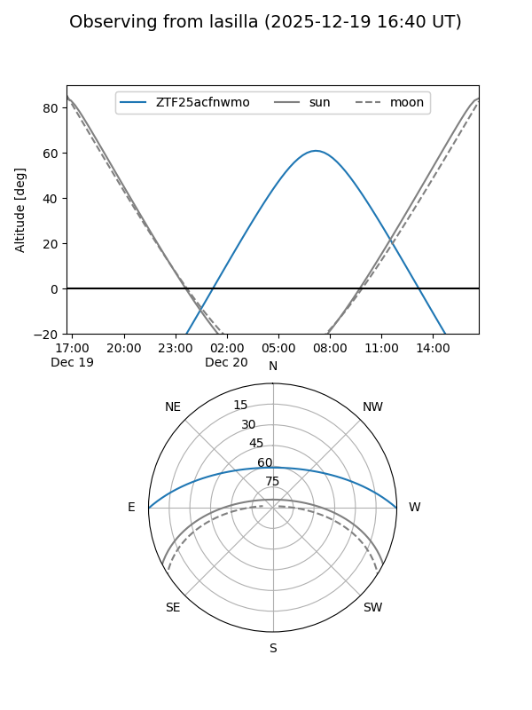
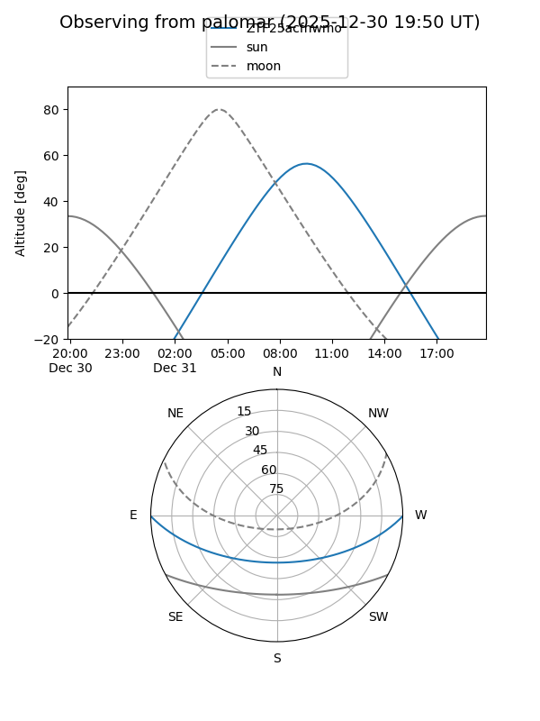

ZTF25acfnwmo
Target ZTF25acfnwmo at 2025-12-18 11:18
Aliases and brokers:
FINK: fink-portal.org/ZTF25acfnwmo
Lasair: lasair-ztf.lsst.ac.uk/objects/ZTF25acfnwmo
ALeRCE: alerce.online/object/ZTF25acfnwmo
alt names
ZTF25acfnwmo (ztf,fink_ztf)
Coordinates:
equatorial (ra, dec) = 125.8381,-0.16987
equatorial (HMS+DMS) = 08:23:21.14,-00:10:11.54
galactic (l, b) = (224.0334,+20.24814)
Photometry
last ztfg=20.39
1 ztfg detections
Lightcurve

Visibility


Additional plots